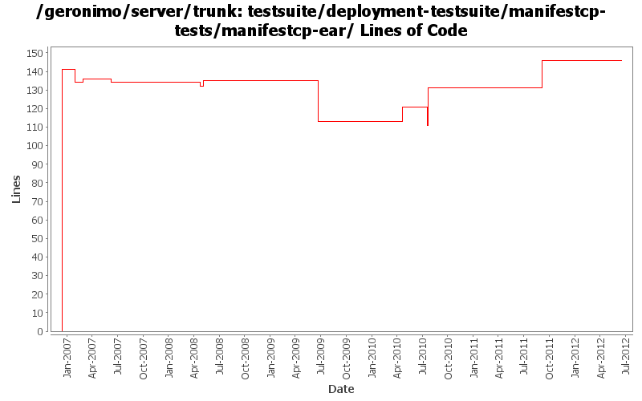

[root]/testsuite/deployment-testsuite/manifestcp-tests/manifestcp-ear
 src
(0 files, 0 lines)
src
(0 files, 0 lines)
 main
(0 files, 0 lines)
main
(0 files, 0 lines)
 resources
(0 files, 0 lines)
resources
(0 files, 0 lines)
 META-INF
(0 files, 0 lines)
META-INF
(0 files, 0 lines)

| Author | Changes | Lines of Code | Lines per Change |
|---|---|---|---|
| Totals | 29 (100.0%) | 248 (100.0%) | 8.5 |
| prasad | 6 (20.7%) | 144 (58.1%) | 24.0 |
| gawor | 3 (10.3%) | 58 (23.4%) | 19.3 |
| xiaming | 3 (10.3%) | 18 (7.3%) | 6.0 |
| jdillon | 10 (34.5%) | 15 (6.0%) | 1.5 |
| djencks | 2 (6.9%) | 7 (2.8%) | 3.5 |
| rickmcguire | 2 (6.9%) | 3 (1.2%) | 1.5 |
| kevan | 2 (6.9%) | 2 (0.8%) | 1.0 |
| hogstrom | 1 (3.4%) | 1 (0.4%) | 1.0 |
Update trunk version to 4.0.0-SNAPSHOT
1 lines of code changed in 1 file:
GERONIMO-5461 reenable deployment-testsuite firstly, jca-cms-tests still failed to deployment
15 lines of code changed in 1 file:
[maven-release-plugin] prepare release 3.0-M2
1 lines of code changed in 1 file:
[maven-release-plugin] prepare branch 3.0-M2
2 lines of code changed in 1 file:
revert r966484 and add support for running the tests without starting a server
22 lines of code changed in 1 file:
GERONIMO-5262 Add it-manual profile and set it as the default profile
2 lines of code changed in 1 file:
GERONIMO-5290 fix many of the deprecation warnings from maven 3
6 lines of code changed in 1 file:
GERONIMO-5262: Update deployment-testsuite
36 lines of code changed in 1 file:
GERONIMO-4655 upgrade version to 3.0-SNAPSHOT, make a few things more consistent
1 lines of code changed in 1 file:
remove references to testsuite-maven-plugin as it's not really used and working right
0 lines of code changed in 1 file:
(GERONIMO-3980) Use shitty-maven-plugin instead of maven-maven-plugin to drive test builds
5 lines of code changed in 1 file:
Drop per-module legal muck
0 lines of code changed in 2 files:
Pom cleanup
1 lines of code changed in 1 file:
Update LICENSE and NOTICE files. Merge from 2.1 branch
1 lines of code changed in 1 file:
upgrade trunk to 2.2-SNAPSHOT
1 lines of code changed in 1 file:
Update groupId for the testsuite-maven-plugin
1 lines of code changed in 1 file:
(GERONIMO-3771) Moved maven-plugins/* to buildsupport/*, updated groupId to org.apache.geronimo.buildsupport
1 lines of code changed in 1 file:
* updated copyright date to 2007
1 lines of code changed in 1 file:
Changed trunk to 2.1-SNAPSHOT
1 lines of code changed in 1 file:
* Removed comment about jira MNG-2221.
0 lines of code changed in 1 file:
Std props
3 lines of code changed in 3 files:
* legal files muck
2 lines of code changed in 2 files:
* deleted unused itests
* configured war-plugin at top to filter webapp resources
* configured ear-plugin at top to use filtered resourcesDir
* added test-jetty, test-security, test-tomcat, test-web-references (Thanx Krish)
* beautified some poms
* changed pkg names of java files in test-jsps and test-servlets
0 lines of code changed in 1 file:
Use ${version} instead of ${pom.version} or ${geronimoVersion} for deps
Fixed some deps to use the DM config for their version, created missing DM for el spec
Drop duplicate annotation in DM
Using geronimo-jta_1.1_spec everywhere geronimo-jta_1.0.1B_spec was used before
Few comments on future version fixes that need to be made
Dropped some obvious copy-paste of pom scm and build elements which are uneeded
4 lines of code changed in 1 file:
* reorganised such that manifestcp can now be built and tested under same pom.
141 lines of code changed in 1 file: